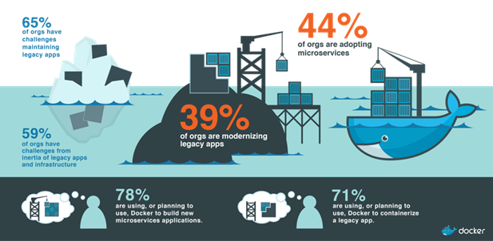

Pengertian DevOps
DevOps adalah istilah baru yang muncul dari dua tren utama terkait. Yang pertama disebut dengan “sistem administrasi tangkas” atau “operasi tangkas”. Sebutan tersebut muncul dari penerapan Agile yang lebih baru dan Pendekatan “Lead” untuk pekerjaan operasi. Yang kedua adalah perluasan pemahaman dari nilai kolaborasi antara divisi pembangunan dan staf operasi pada semua tahapan siklus pengembangan hingga pengoperasian layanan. Operasional yang berkualitas semakin dibutuhkan saat ini untuk lebih berfokus pada layanan.
Pada saat proses pembangunan serta pengembangan penyediaan kerangka kerja dalam rangka pengiriman perangkat lunak lebih cepat, maka pendekatan yang serupa bisa dipergunakan melalui proses pengiriman aplikasi lengkap. Pengertian DevOps di dalam dunia teknologi informasi, yakni dengan adanya model DevOps maka teknologi seperti virtualisasi serta otomatisasi data center memungkinkan pengembangan serta pengiriman aplikasi yang bisa dipergunakan secara bersamaan tanpa mengganggu operasional bisnis harian.
Tujuan DevOps :
DevOps bertujuan untuk bisa merealisasikan ide pengembangan bisnis dengan cara menghasilkan fitur-fitur baru pada sistem informasi di sebuah perusahaan.
Keunggulan DevOps :
- DevOps mendukung wideAPI serta platform terintegrasi yang memudahkan proses otomatisasi pengiriman aplikasi dalam pengembangan, pengujian serta pada saat dipergunakan untuk operasional.
- DevOps merupakan upaya pengembangan software terbaru, yang mana adanya perbedaan lingkungan diantara pengembang serta user (operasional IT pada perusahaan klien) dapat teratasi.
- Adanya DevOps membuat pihak pengembang dan pihak user memperoleh pengalaman yang sama. Selanjutnya mereka bisa melakukan komunikasi serta kolaborasi dengan lebih lancar.
- DevOps merupakan solusi bagi lingkungan pengembangan perangkat lunak yang berkelanjutan, khususnya bagi Anda yang sering merilis update perangkat lunak (software), misalnya Flickr. Dorongan awal bagi DevOps adalah dari kebutuhan agar dapat mengintegrasikan operasi untuk menciptakan pengembangan perangkat lunak menjadi lebih efisien serta berkualitas tinggi.
- DevOps berawal dari kesadaran bahwa infrastruktur bukan hanya untuk mendukung kemampuan produksi saja, akan tetapi juga untuk pembangunan secara berkelanjutan. Sehingga DevOps harus ada pada satu lingkungan yang digabung serta mengatur konsep. Misalnya, ketika kita menulis sofware dalam lingkungan virtual, maka kita bisa meyakinkan bahwa spftware kita sudah dapat dipergunakan dan akan mulus pada lingkungan tersebut. DevOps memastikan kita bahwa tim operasi tetap terlibat pada seluruh siklus pengembangan software untuk memastikan lancarnya proses melalui transisi serta penyebaran secara efisien.
Mengapa Docker sangat membantu dalam DevOps?
Dikarenakan Docker bisa mendukung pendekatan DevOps dengan cara memberikan fasilitas berkolaborasi antara pengembang dengan user (pihak operasional), sehingga hal ini akan membuat proses penyelesaian pengembangan lebih cepat.
Anda bisa memisahkan aplikasi dari infrastruktur dan bisa memperlakukan infrastruktur sebagaimana aplikasi yang dikelola. Docker membantu dalam pembagunan kode, uji coba serta menyebarkannya. Semuanya dilakukan lebih cepat. Selain itu adanya sistem kontenerisasi Docker sebagai platform bisa menghemat waktu serta biaya lebih efisien. Melihat beberapa sisi keunggulannya, maka perlu pengenalan Docker sebagai pemahaman awal .
Docker juga bisa mempercepat kinerja infrastruktur IT dengan cara menggabungkan fitur kernel containerization dengan alur kerja serta perkakas yang membantu Anda dalam pengelolaan selanjutnya menyebarkan aplikasi.
Beberapa keunggulan Docker untuk DevOps
Sesuai moto mereka: Build, Ships and Run yang merupakan 3 hal utama yang dikedepankan oleh Docker.
- Build, Docker memungkinkan untuk menulis aplikasi dari microservices, tanpa khawatir tentang inkonsistensi antara pembangunan dan lingkungan produksi, dan tanpa mengunci ke platform atau bahasa.
- Ship, Docker memungkinkan untuk merancang seluruh siklus pengembangan aplikasi, pengujian, dan distribusi, dan mengelolanya dengan antarmuka pengguna yang konsisten.
- Run, Docker menawarkan kemampuan untuk menyebarkan layanan scalable yang aman dan andal di berbagai platform.
Selanjutnya para pengembang bisa memaketkan seluruh runtime serta library yang diperlukan dalam pembagunan atau pengembangan aplikasi, pengujian, melakukan aplikasi dengan lebih efisien, memberikan standar dengan jelass serta bisa memastikan program bisa berjalan dengan lancar pada lingkungan multi platform selama mendukung Docker.
Docker untuk Integrasi Berkesinambungan
eBay telah berfokus menggabungkan Docker ke dalam proses integrasi berkesinambungan mereka untuk membakukan penyebaran di jaringan server terdistribusi yang dijalankan sebagai satu cluster. Mereka mengisolasi dependensi aplikasi dalam wadah untuk mengatasi masalah masing-masing server yang memiliki versi software yang berbeda, ketergantungan aplikasi, dan perangkat keras khusus. Ini berarti host OS tidak perlu sama dengan OS kontainer, dan akhir-tujuan mereka adalah untuk memiliki perangkat keras dan perangkat lunak yang berbeda sistem yang berjalan sebagai Mesos cluster.
Referensi :
Mungkin hanya itu yang bisa saya sampaikan dan semoga bermanfaat untuk kalian semua.